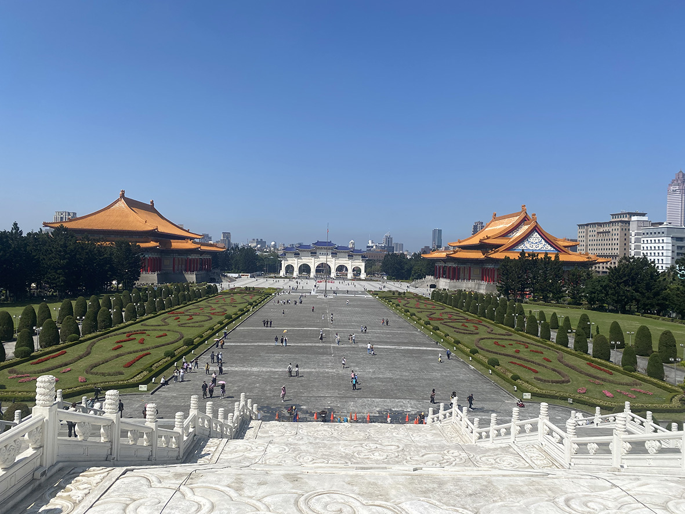
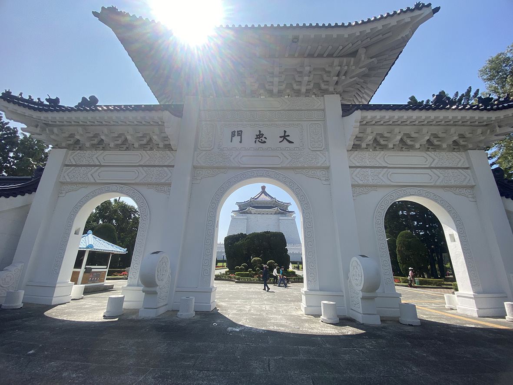
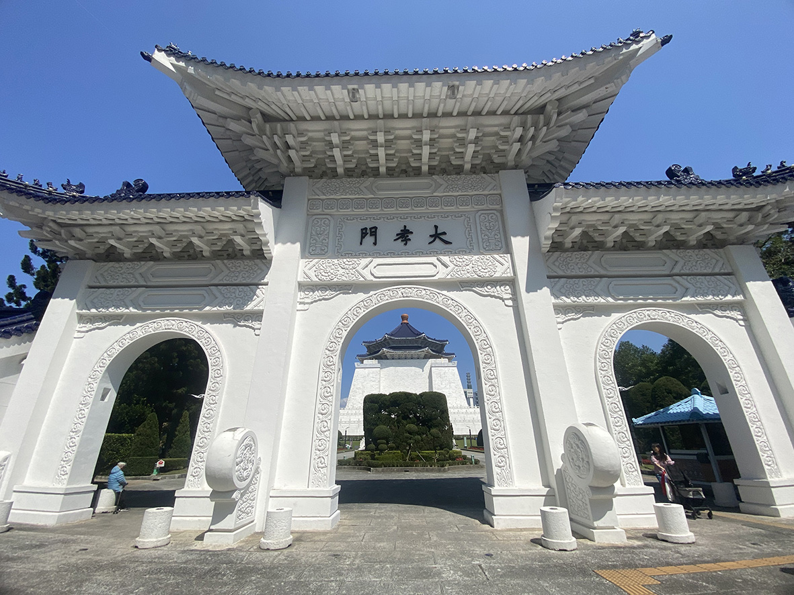
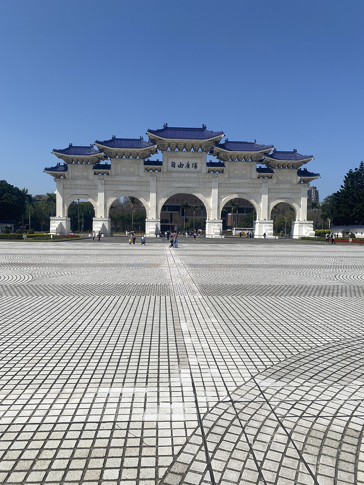
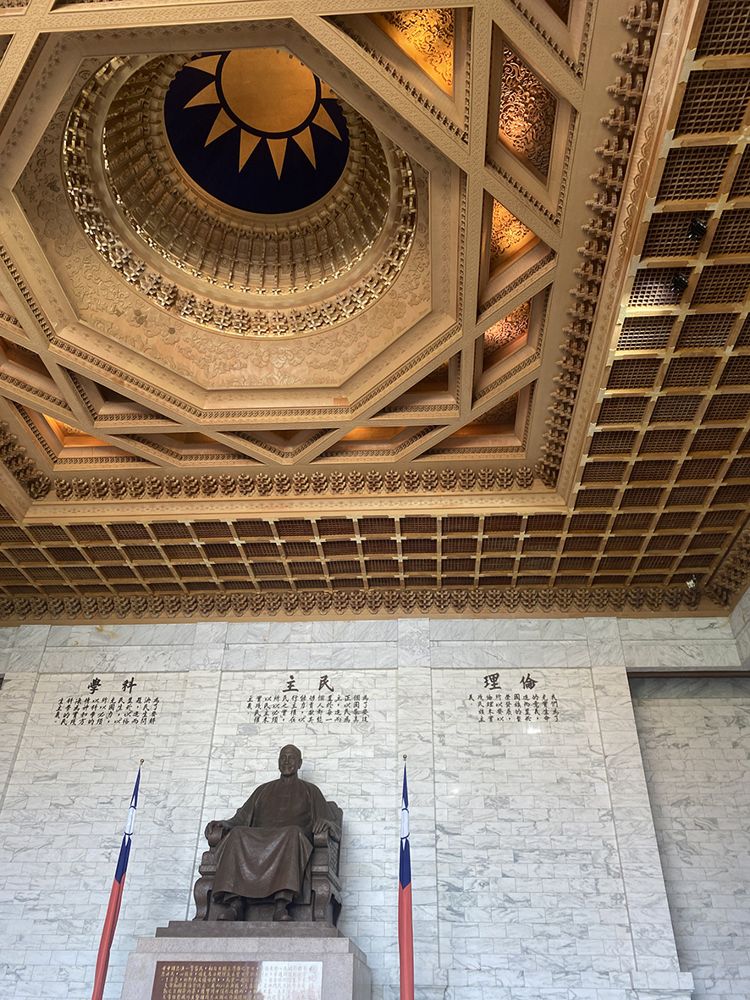
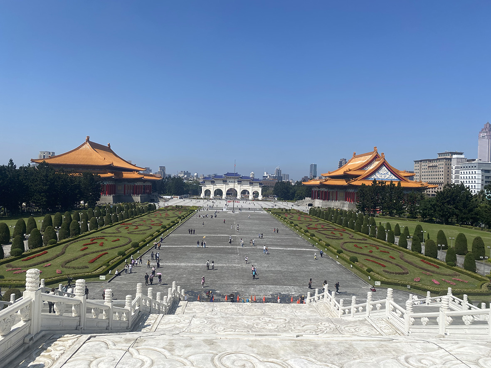
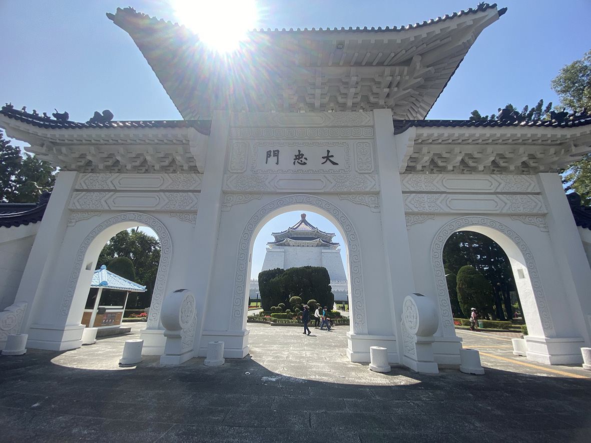
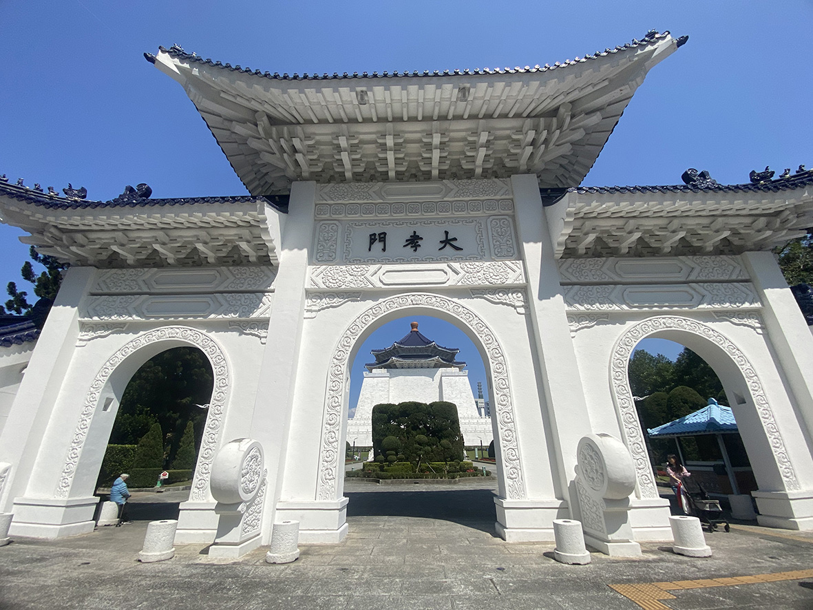
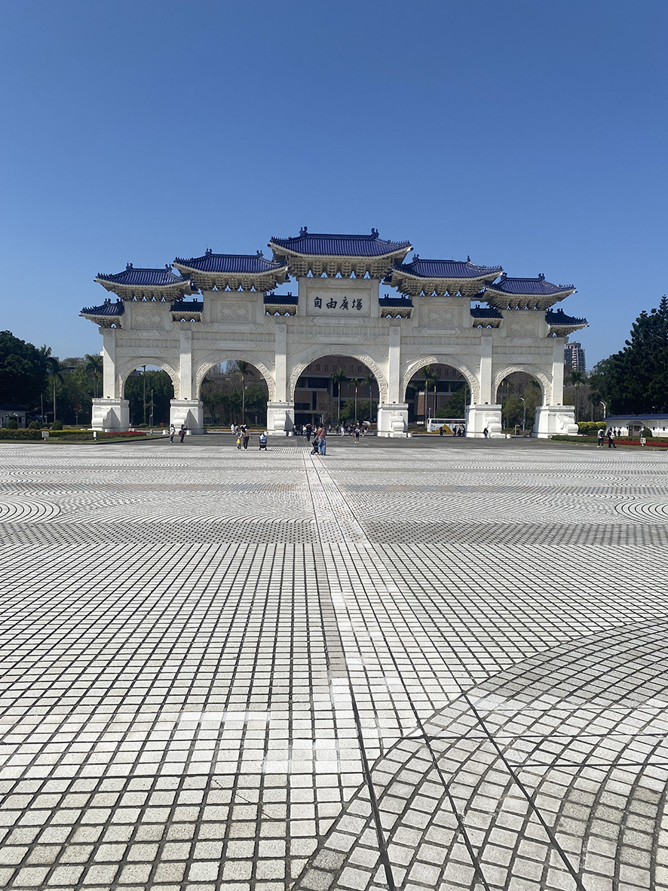
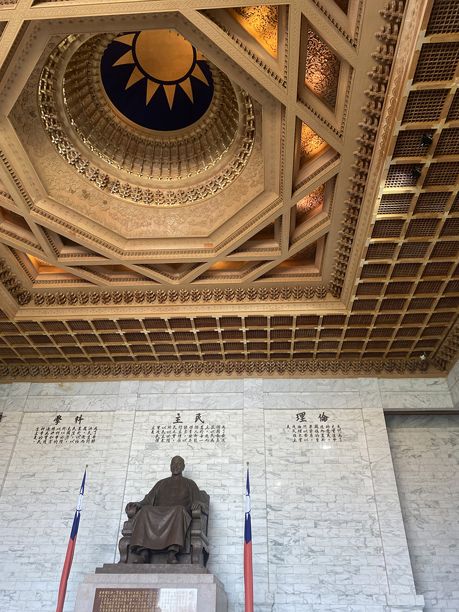

中正紀念堂
 









中正紀念堂的建築融合了中國傳統宮殿風格與現代結構技術，象徵穩重與莊嚴。其設計由 楊卓成建築師負責，靈感來自北京的天壇，並採用傳統與現代工法相結合的方式建造。
紀念堂本體是一座高約 70 公尺的四方形建築，屋頂為雙重藍色琉璃瓦攢尖頂，並帶有八 角造型，象徵中國傳統的「天圓地方」理念。
雙重攢尖式藍瓦屋頂，取自中國宮殿建築，象徵高貴與莊重。 屋頂的八角形設計，對應「八德」( 忠、孝、仁、愛、信、義、和平 )，具有文化意義。
紀念堂本體分為地上兩層、地下兩層
紀念大廳：位於建築二樓，中央設置蔣介石銅像，高度約 6.3 公尺，由黃銅鑄造。銅像背 後刻有「倫理、民主、科學」，為三民主義的精神標誌。大廳內部高聳，天花板設有象徵性 的裝飾圖案，營造莊嚴氛圍。通往二樓大廳的樓梯共有 89 階，象徵蔣介石享年 89 歲。
地下樓層設有展覽廳，展示蔣介石的生平、歷史文件、文物及相關史料。
紀念堂正門為三座高大的拱門，稱為「大中至正門」，象徵公平正直的精神。
自由廣場原名為中正紀念堂廣場，2007 年改為自由廣場。
國家戲劇院與國家音樂廳兩座建築分列於紀念堂左右，屋頂為傳統宮殿式重簷黃瓦屋頂， 融合中國傳統建築與現代技術。為台灣最重要的表演藝術場館之一，定期舉辦音樂會、戲劇、 舞蹈表演等。
小時候我們全家偶爾會來中正紀念堂看阿兵哥的交接儀式，讓我印象最深刻的是阿兵哥們 的整齊劃一，還有那個 89 街的階梯，每次上去都喘吁吁。直到我真正去了解這座紀念堂， 我才知道原來一座建築有這麼多的象徵及含意。